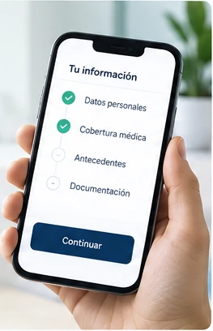

01 · Solución digital
Onboarding de pacientes
Digitalización de datos, documentación e información previa a la atención.
Ver demoAcerca de esta demo
- Usuarios
- Paciente y recepción.
- Qué demuestra
- La institución elige una plantilla y el flujo del paciente se adapta.
- Cómo se adapta
- Secciones y documentos requeridos por tipo de atención.
- Simulado
- Carga de archivos y envío de datos. No reemplaza la historia clínica.
